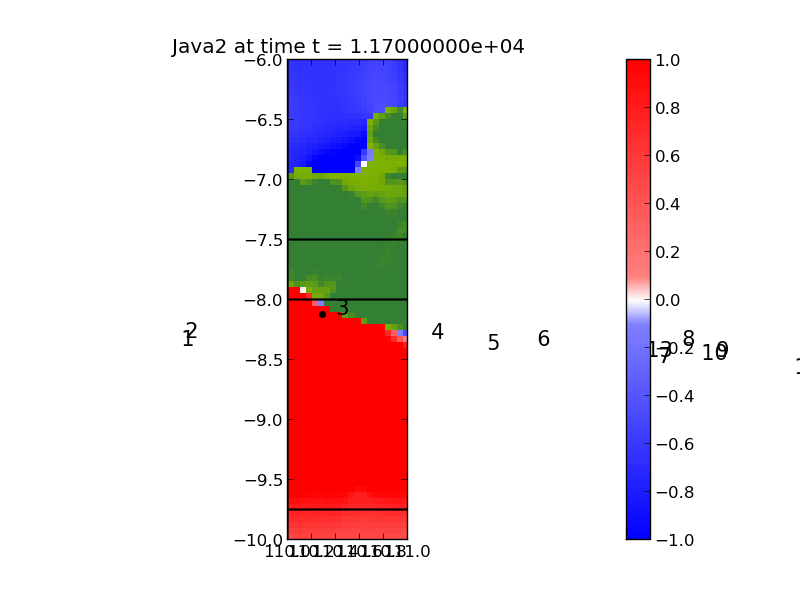

< < < Index > > >

Image source: /home/clawuser/tsunami2/_plots/frame0013fig25.png
Other figures at this time: Coarse Java Java2 Java3 Java4 All Figures
Other frames: 0 1 2 3 4 5 6 7 8 9 10 11 12 13 14 15 16 All Frames